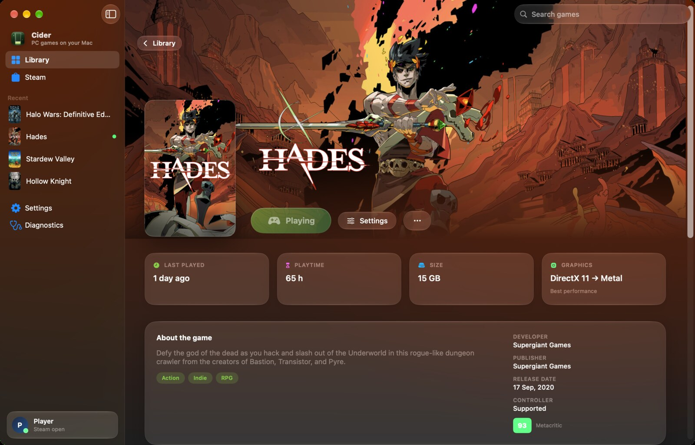
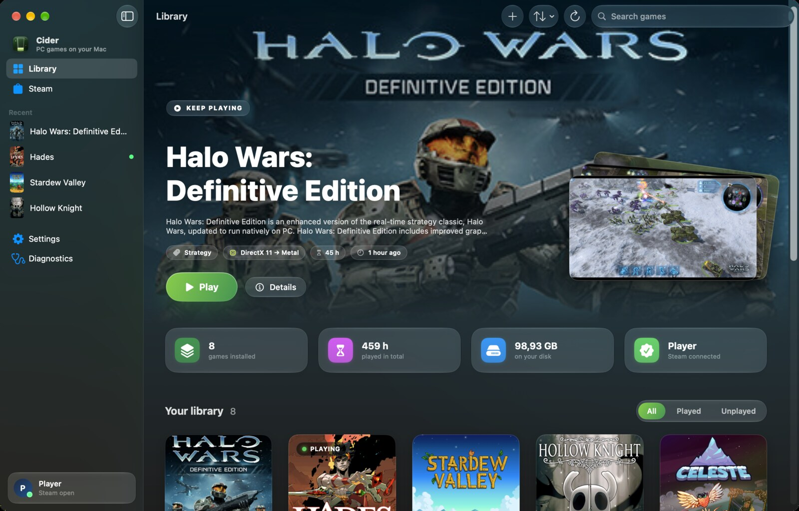
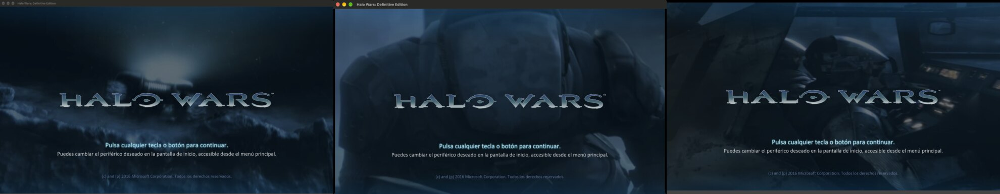
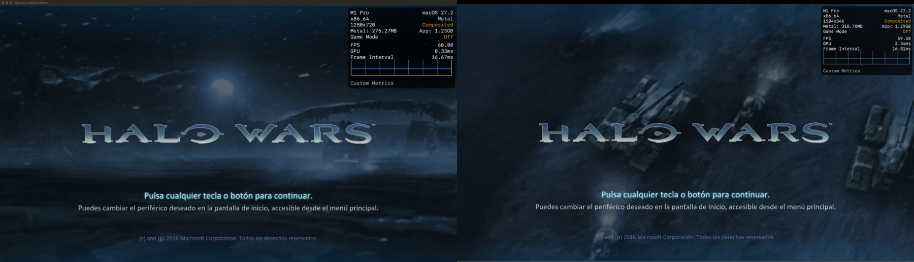
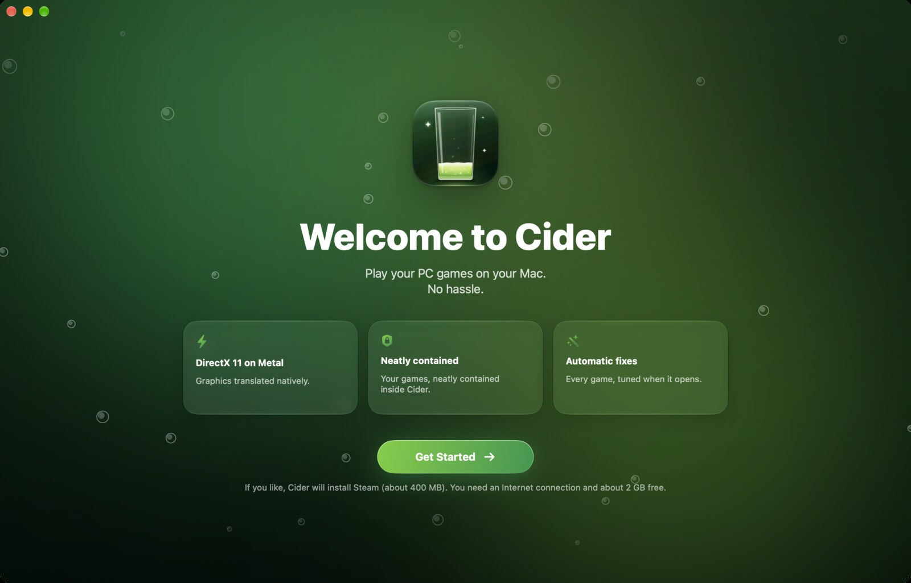
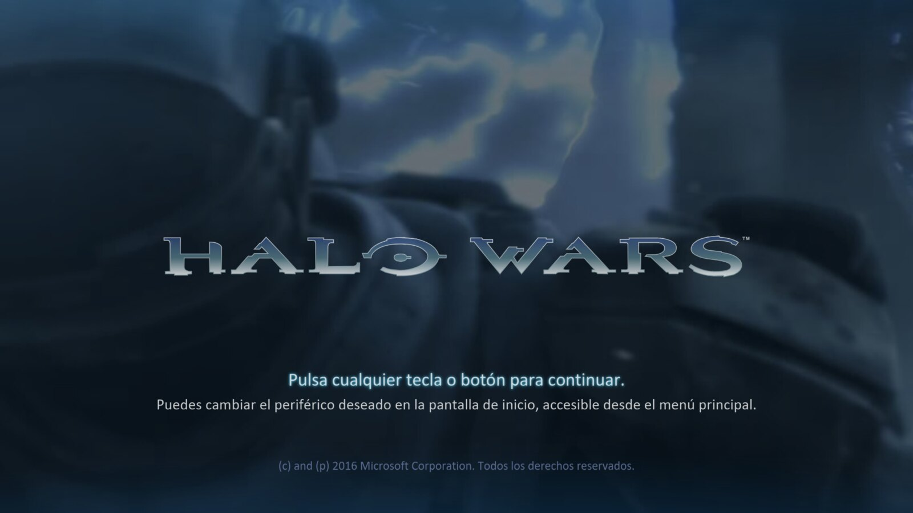

Tu biblioteca de Steam, a lo grande
Portadas, arte, descripciones y capturas. Horas jugadas, última partida y qué juego está abierto ahora mismo.

Una app nativa para Mac con Apple Silicon. Abre tu biblioteca de Steam, pulsa Jugar y listo. Sin máquinas virtuales.

Portadas, arte, descripciones y capturas. Horas jugadas, última partida y qué juego está abierto ahora mismo.

Arrastra un .exe, usa Abrir con → Cider o ejecuta un instalador y Cider encuentra el juego que ha instalado.
DLL nativas donde hacen falta, arranque en ventana para Unity, Unreal y Source, y modo sin anticheat si el juego lo ofrece.
Minimiza, redimensiona o pasa a pantalla completa con el botón verde. Incluso en juegos que solo traen ventana fija.

Renderiza al 75, 67 o 50 % y deja que macOS escale la imagen. Se nota mucho en pantallas grandes.

Al abrirse busca versiones nuevas en GitHub, descarga la actualización, la verifica y se reinicia.


Halo Wars: Definitive Edition y Halo: The Master Chief Collection funcionan de principio a fin, en modo sin anticheat.
Cider lleva dentro un Wine afinado y DXMT, que traduce Direct3D 10 y 11 a Metal. Todo libre, todo en tu Mac.
Baja el .dmg de la última versión.
Abre el disco y arrastra Cider a Aplicaciones.
Cider aún no está notarizado por Apple. Ábrelo una vez y ve a Ajustes del Sistema → Privacidad y seguridad → Abrir igualmente.
Sigue el asistente. A partir de ahí, Cider se actualiza solo.
Nada. Cider es software libre con licencia MIT. El motor que incluye mantiene sus propias licencias libres (Wine LGPL, DXMT MIT, MoltenVK y LLVM Apache 2.0).
No. En la preparación puedes elegir «Ahora no, continuar sin Steam» y usar solo los juegos que añadas tú. Steam se puede instalar más tarde desde su sección. Cider nunca incluye Steam: descarga el instalador oficial de Valve.
Porque todavía no está notarizado por Apple. Ábrelo una vez, ve a Ajustes del Sistema → Privacidad y seguridad y pulsa «Abrir igualmente». Solo hace falta hacerlo una vez.
En ~/Library/Application Support/Cider/. Ahí viven el prefijo de Wine, Steam y tus juegos. Desde Ajustes puedes abrir la carpeta o restablecerlo todo.
Abre un informe de juego en GitHub, funcione o no. Si algo falla en la propia app, usa el informe de error.